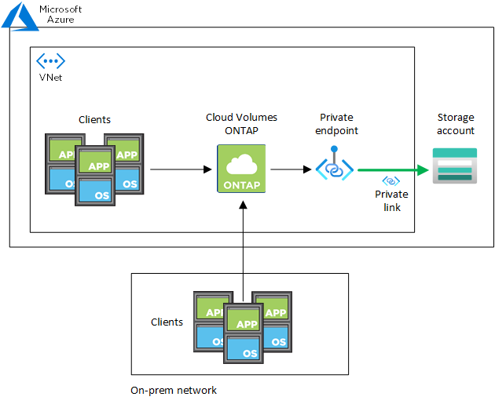

版本資訊
版本資訊
使用Azure私有連結或服務端點
 建議變更
建議變更
使用Azure Private Link連線至相關儲存帳戶。Cloud Volumes ONTAP如有需要、您可以停用Azure私有連結、改用服務端點。
總覽
根據預設、BlueXP會啟用Azure Private Link、以便Cloud Volumes ONTAP 在支援的各個儲存帳戶之間建立連線。Azure Private Link可保護Azure中端點之間的連線安全、並提供效能優勢。
如有需要、您可以設定Cloud Volumes ONTAP 使用服務端點、而非Azure Private Link。
無論是哪一種組態、BlueXP都會限制Cloud Volumes ONTAP 存取網路、以利連接到各個儲存帳戶。網路存取僅限於Cloud Volumes ONTAP 部署了下列項目的vnet和部署Connector的vnet。
停用Azure私有連結、改用服務端點
如果貴企業需要、您可以變更BlueXP中的設定、使Cloud Volumes ONTAP 其設定使用服務端點、而非Azure私有連結。變更此設定會套用Cloud Volumes ONTAP 至您所建立的新版資訊系統。服務端點僅在中受支援 "Azure區域配對" 連接器與Cloud Volumes ONTAP 胎心之間。
連接器應部署在Cloud Volumes ONTAP 其所管理的或所管理的各個系統所在的Azure區域 "Azure區域配對" 適用於整個系統。Cloud Volumes ONTAP
-
在BlueXP主控台右上角、按一下「設定」圖示、然後選取「連接器設定」。

-
在* Azure 下、按一下*使用Azure Private Link。
-
取消選擇* Cloud Volumes ONTAP 在不同時使用*私有連結的情況下、連接到儲存帳戶*。
-
按一下「 * 儲存 * 」。
如果您停用Azure私有連結、且Connector使用Proxy伺服器、則必須啟用直接API流量。
使用Azure私有連結
在大多數情況下、您不需要做任何事、就能使用Cloud Volumes ONTAP 下列功能來設定Azure私有連結：BlueXP會為您管理Azure私有連結。但如果您使用現有的Azure私有DNS區域、則必須編輯組態檔。
自訂DNS的需求
或者、如果您使用自訂DNS、則需要從自訂DNS伺服器建立條件轉寄站、以前往Azure私有DNS區域。若要深入瞭解、請參閱 "Azure關於使用DNS轉寄站的文件"。
私有連結連線的運作方式
當BlueXP在Cloud Volumes ONTAP Azure中部署時、它會在資源群組中建立一個私有端點。私有端點與Cloud Volumes ONTAP 用於實現功能不均的儲存帳戶相關聯。因此Cloud Volumes ONTAP 、存取資料可透過Microsoft主幹網路存取。
當用戶端與Cloud Volumes ONTAP S時 位於相同的vnet內、在連接VNets的對等網路內、或在使用私有VPN或ExpressRoute連線至vnet的內部部署網路中、用戶端存取會透過私有連結進行。
以下範例顯示用戶端透過私有連結從同一個Vnet存取、以及從內部網路存取具有私有VPN或ExpressRoute連線的權限。


|
如果連接器和Cloud Volumes ONTAP 物件系統部署在不同的VNets中、則您必須在部署連接器的vnet和Cloud Volumes ONTAP 部署了該系統的vnet之間設定vnet對等關係。 |
提供您Azure私有DNS的詳細資料給BlueXP
如果您使用 "Azure 私有 DNS"然後您需要修改每個 Connector 上的組態檔。否則、BlueXP無法在Cloud Volumes ONTAP 支援的儲存帳戶之間啟用Azure Private Link連線。
請注意、 DNS 名稱必須符合 Azure DNS 命名需求 "如 Azure 文件所示"。
-
SSH 連接至 Connector 主機並登入。
-
瀏覽至下列目錄：/opp/application/netapp/cloudmanager/docker_occm/data
-
使用下列關鍵字-值配對新增「user-Private - DNS"區域設定參數、以編輯app.conf：
"user-private-dns-zone-settings" : { "resource-group" : "<resource group name of the DNS zone>", "subscription" : "<subscription ID>", "use-existing" : true, "create-private-dns-zone-link" : true }此參數應與「system-id」輸入的層級相同、如下所示：
"system-id" : "<system ID>", "user-private-dns-zone-settings" : {請注意、只有當私有DNS區域的訂閱與Connector不同時、才需要訂購關鍵字。
-
儲存檔案並登出 Connector 。
不需要重新開機。
在故障時啟用復原功能
如果BlueXP無法建立Azure私有連結做為特定行動的一部分、則在不使用Azure私有連結連線的情況下完成此動作。當建立新的工作環境（單一節點或HA配對）、或是HA配對上發生下列動作時、就會發生這種情況：建立新的Aggregate、新增磁碟至現有的Aggregate、或是在超過32 TiB時建立新的儲存帳戶。
如果BlueXP無法建立Azure私有連結、您可以啟用復原功能來變更此預設行為。這有助於確保您完全符合貴公司的安全法規。
如果您啟用復原、則BlueXP會停止動作、並回溯作為行動一部分所建立的所有資源。
您可以透過API或更新app.conf檔案來啟用復原功能。
*透過API*啟用復原功能
-
使用
PUT /occm/config使用下列要求本文進行 API 呼叫：{ "rollbackOnAzurePrivateLinkFailure": true }
更新app.conf以啟用復原功能
-
SSH 連接至 Connector 主機並登入。
-
瀏覽至下列目錄：/opp/application/netapp/cloudmanager/docker_occm/data
-
新增下列參數和值來編輯app.conf：
"rollback-on-private-link-failure": true . 儲存檔案並登出 Connector 。
不需要重新開機。